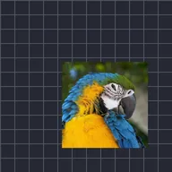

Oscilar

Move a camada para frente e para trás em um ângulo, em profundidade ou em órbita.
Oscillate move uma camada para frente e para trás sozinho. Direction escolhe o movimento ao longo de um Angle, em Depth, ou em círculo em uma Orbit. Frequency é o número de oscilações por segundo, Magnitude a distância que ela percorre, e Wave é Sine (suave) ou Triangle (velocidade constante). Use Phase para defasar várias camadas para que não se movam juntas.
Configurações
| Configuração | Tipo | Intervalo | Padrão |
|---|---|---|---|
| Direção | Opção | Ângulo, Profundidade, Órbita | Ângulo |
| Ângulo | Ângulo | -3600° a 3600° | 45° |
| Frequência | Número | 0 Hz a 16 Hz | 2 Hz |
| Magnitude | Número | 0 a 4000 | 25 |
| Onda | Opção | Seno, Triângulo | Seno |
| Fase | Número | 0 a 1000 | 0 |